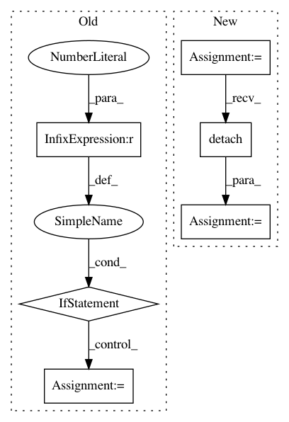

ce9ef7662cad1788017899cda41dbca3cc396b71,catalyst/rl/offpolicy/sampler.py,Sampler,run,#Sampler#,163
Before Change
set_global_seeds(seed)
if self.seeds is None:
hard_seed_prob = random.random()
if len(self.hard_seeds) > 0 and hard_seed_prob < 0.5:
seed = random.sample(self.hard_seeds, 1)[0]
else:
seed = random.randrange(SEED_RANGE)
else:
seed = random.choice(self.seeds)
set_global_seeds(seed)
self.buffer.init_with_observation(self.env.reset())
After Change
if self.episode_index % self.weights_sync_period == 0:
self.load_network_weights()
states = self.buffer.get_states_history(
history_len=self.history_len
)
states = self.to_tensor(states).detach()
self.buffer = SamplerBuffer(
capacity=self.buffer_size,
observation_shape=self.env.observation_shape,
In pattern: SUPERPATTERN
Frequency: 3
Non-data size: 6
Instances
Project Name: Scitator/catalyst
Commit Name: ce9ef7662cad1788017899cda41dbca3cc396b71
Time: 2019-03-22
Author: grinchuk.alexey@gmail.com
File Name: catalyst/rl/offpolicy/sampler.py
Class Name: Sampler
Method Name: run
Project Name: ruotianluo/self-critical.pytorch
Commit Name: cc8880d39c4a97ed5af943e623d6d02e26f1ebad
Time: 2019-04-18
Author: rluo@ttic.edu
File Name: models/AttModel.py
Class Name: AttModel
Method Name: _sample